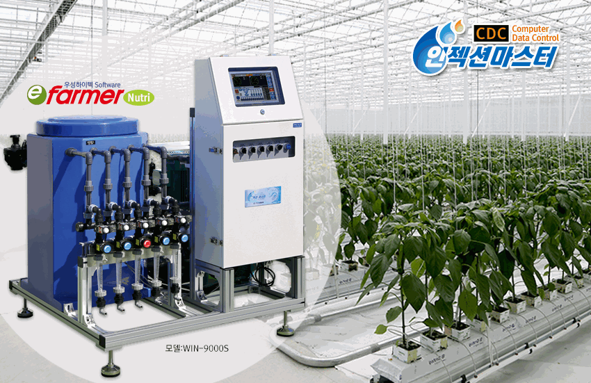
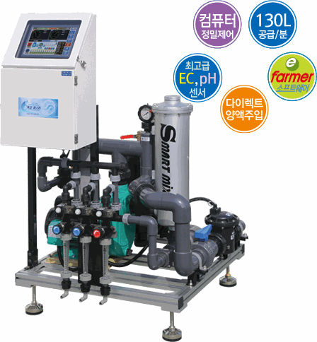

01
TCK SERIES
탱크혼합 연속공급 시스템
Tank Mixing Continuous Supply System
혼합탱크에서 원수와 양액을 연속적으로 혼합한 뒤 각 재배 구역에 공급합니다.
WIN-7000S130L/분WIN-8000S160L/분WIN-9000S200L/분WIN-9300S300L/분
재배 환경에 알맞은 공급 방식을 먼저 선택해 주세요.

혼합탱크에서 원수와 양액을 연속적으로 혼합한 뒤 각 재배 구역에 공급합니다.

원수 배관에 양액을 직접 혼합·주입하여 연속 공급하는 단일 모델 시스템입니다.